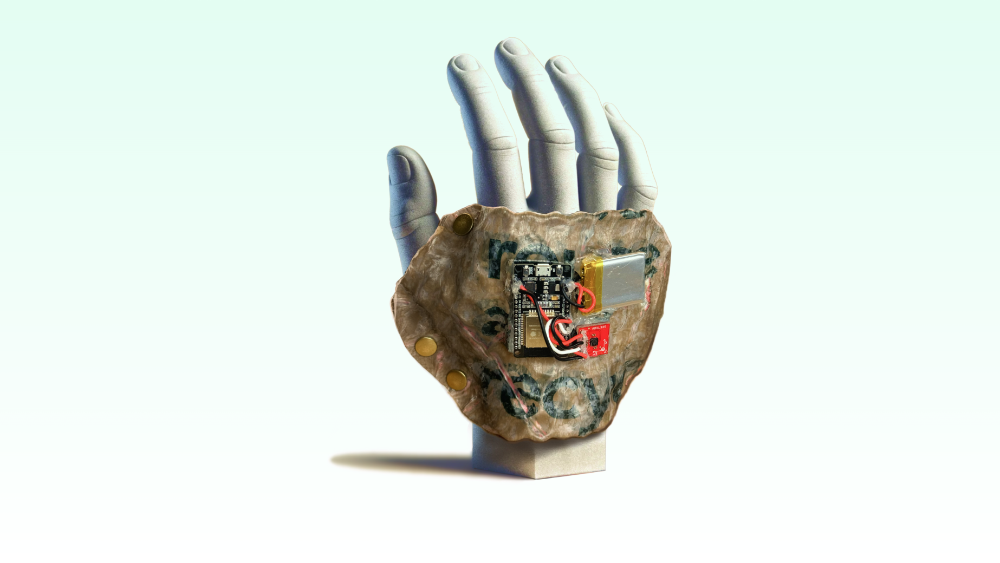
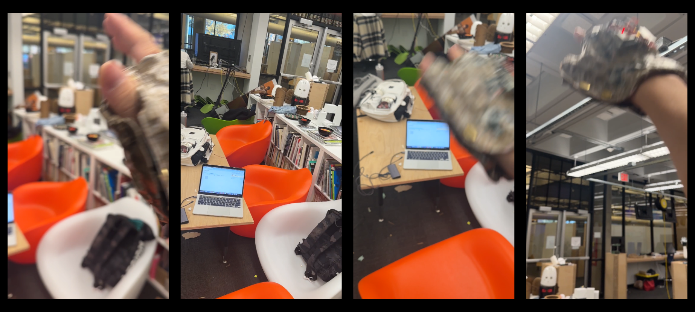
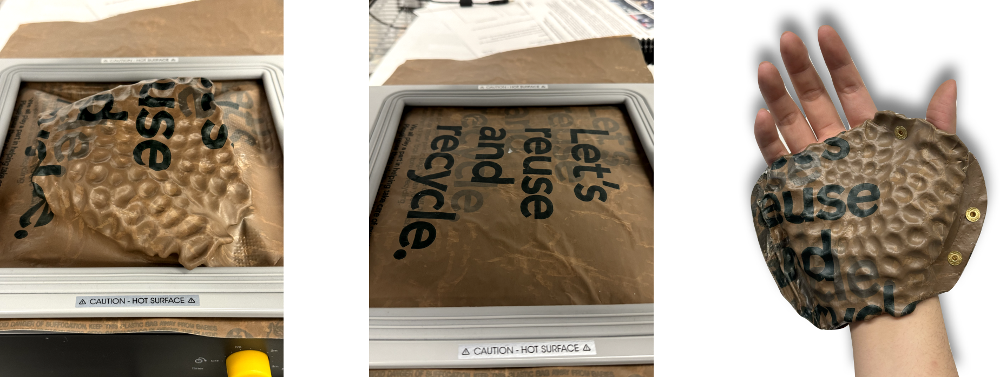
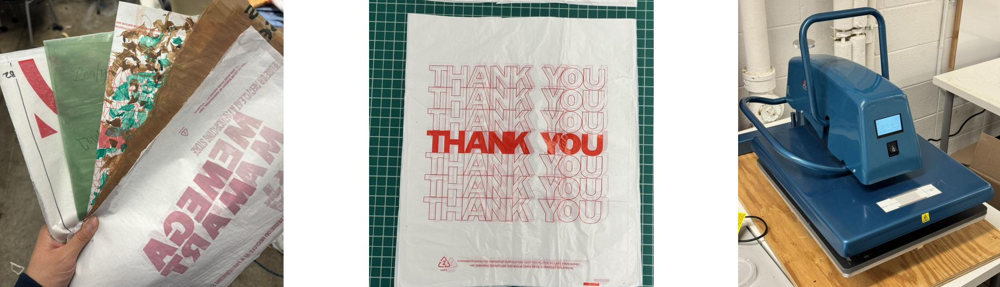
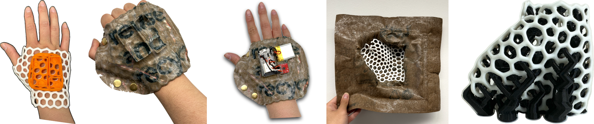

Gloove is an up-cycling wearable that applies everyday material to embody music with groove. It attempts to design for accessible making and performance. In this project, we ideated a accessible fabrication approach and a prototype to capture natural groove. It enables accessible making-based wearable to play music
Time: Nov 2023
Team Project, Responsible for computational prototyping(100%), research(100%), & fabrication(30%)
Advised by: HyunJoo Oh

Background & Problem Space
Music is sophisticated in performance. Professionals master the music knowledge on both how to capture rhythms and how to perform it with elaborate instruments. While laypeople have an instinct to groove with pitch, rhythm, or dynamics, they cannot differentiate minor differences precisely. For example, people with no music knowledge cannot map what they heard onto the keys in the right order. Research found that novices and experts differ in how they sense music elements such as rhythm and pitch. They also integrate sensation into gesture movement differently. They grow more sensitive with more engagement, and therefore integrate sensations more skillfully coined tacit knowledge to name such knowledge that is only gained during doing. Within the progress, people sense rhythms and arrange touches on the keys, drums, or strings with a spatial-temporal order, and such progress usually takes long time to learn. This challenge in learning hinders people from performing music with elaborate instruments.
While traditional musical instruments hinders novice from approaching music, human-computer interaction has improved how human engage with music. People apply varying input devices to instinctively interact with music, such as hardware interfaces, console surfaces, or gesture controllers. Design and Research communities also apply digital fabrication to enable novel instrument or supplementary technologies to help performance. These technologies explored accessible performance, but seldom explore accessible making. It is undervalued to explore fabrication and material for accessible making.
In this project, we propose a fabrication approach to turn unused plastic bags into a wearable that is interactive, sustainable, easy to use, and friendly for making.
Ideation & Design
We explore a fabrication approach to turn plastic bags into an accessible wearable for music-play.
We specify our design ideas from 4 aspects:
Embedded Electronics: We deform compound plastic sheets along mould’s contour. This enables physical electronic components to be embedded as an interactive wearable.
Morphing Material: We turn unused plastic bags into compound-layered sheets. It is soft and robust to morph in reaction to accumulated heat
Rapid fabrication: Our fabrication approach enables rapid fabrication with compound plastic sheets. Our techniques turn raw sheets into final wearable within a few minutes, much faster than additive manufacturing.
Intuitive interaction: We situate the wearable and interaction within music performance. Instead of dancing to music, our intuitive groove in turn trigger the drumbeat and notes with flexible actions.

Fabrication Approach
Given the need for morphing material, space for embedding electronics, and accessible fabrication, we propose a fabrication approach for 3 parts:
1. Plastic Bags for Upcycling;
2. rapid form-giving for aesthetic;
Modular fabrication for electronic crafts.
Plastic Bags for Upcycling
We collected plastic bags and cut it into rectangle sheets for process of the heat press machine. Accumulated layers of plastic bags enable robust fusion through a heat-press machine. Its heat fuses multiple sheets into an integrated layer. After cooling down, it produces a compound sheet of plastic bags that is robust, directional in texture, multiple-blended in color. Therefore, it will be feasible for a wide range of form-giving techniques and pleasing aesthetics. We prepare such compound sheets for next step’s rapid making.

Rapid form-giving for elaboration
3D printing fabricates elaborate models, but it takes tens of hours to print tiny products. We shift 3d printed outcome from being an artifact to a mould and apply vacuum machine to deform compound sheets following the mould’s contour. Specifically, we clip sheets within interlayer in the vacuum machine, turn it on and cover it onto the printed mould for form-giving. It takes a few minutes to reproduce similar products with prepared mould. Such fabrication process, combing compound sheet as material and printed model as mould, enables rapid deformation with plastic bags for elaborate aesthetic.

Expandable Mould to attach Electronics
Compound sheets of plastic bags make elaborate form factors, and this questions us on expanding mould to modularize the fabrication. We divided printed models into wearable and placement parts and employ snap-fit structure to form a fixed whole. With this setup, we expand the mould by attaching extra electronics. This turns raw wearable into electronic craft so that we have a mediated interaction with wearable artifacts.

Embodied Interaction for Music Performance
We calibrated on the accelerometer. With our algorithm, it sets a drum in the air: Find the drum with your exploration. Every time you hit and raise, it will bounce back for the second hit.